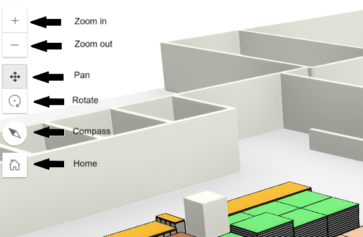
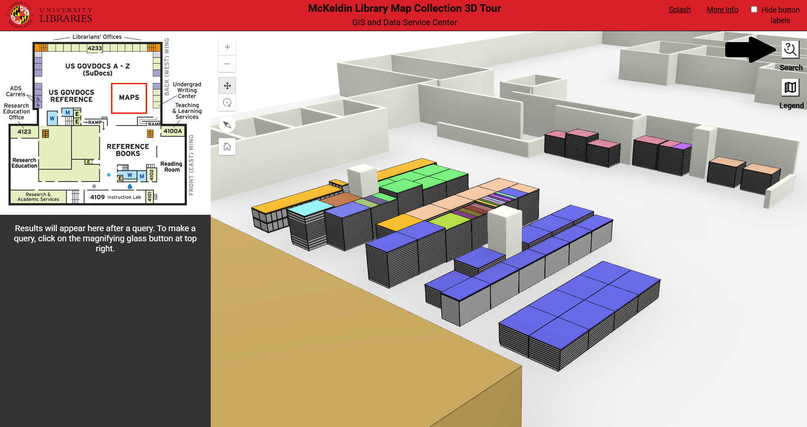
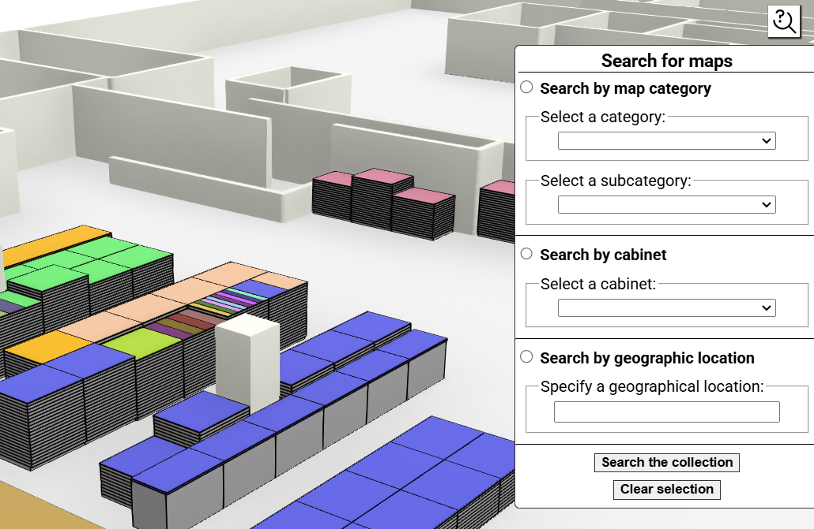

The 3D Tour web application will load soon...
|
|
|
This app provides a way to explore the McKeldin Library map collection online.
Use the map controls at top left to manually explore the 3D environment.
You can search through the collection by clicking on the search button.
The search tool menu will open. Choose a search option and then select it with its respective button at left. Note: if you choose the "geographic location" option, use full words, not abbreviations (e.g., 'United States' instead of 'USA'). Then, click on the "Search the collection" button. The "Clear selection" button may be used to clear any highlights in the 3D map.
Upon clicking the search button, cabinets with relevant results to your query will be highlighted in yellow. In the sidebar, result cards for each drawer will appear. You can click on each of these to zoom to the drawer; upon clicking, the yellow highlights will be replaced with a red highlight for the selected drawer only.
NOTE: on mobile devices, result card functionality is not available.
You can also explore the map manually using the map controls at top left. Upon clicking on any drawer in the map, a pop-up will appear with all relevant relevant information.
This project serves to provide the public with a tool to explore the University of Maryland's vast, largely uncatalogued map collection (200,000+ maps) in an interactive way. It served as a capstone for my studies in the MS in GIS program at the University of Maryland. It sought to combine the knowledge I gained with the practical experience gleaned through more than two years of indoors GIS-related work, much of it involving 3D GIS. I want to thank Milan Budhathoki, William Definbaugh, Jim Nealis, and perhaps most importantly, the Arizona State University's Map and Geospatial Hub, whose 3D Explorer project served as a main inspiration for my own. I also want to thank my professors (Dr. Ma, Dr. Tao, and Dr. Resop) for their kind and unwavering support through my year in the program.